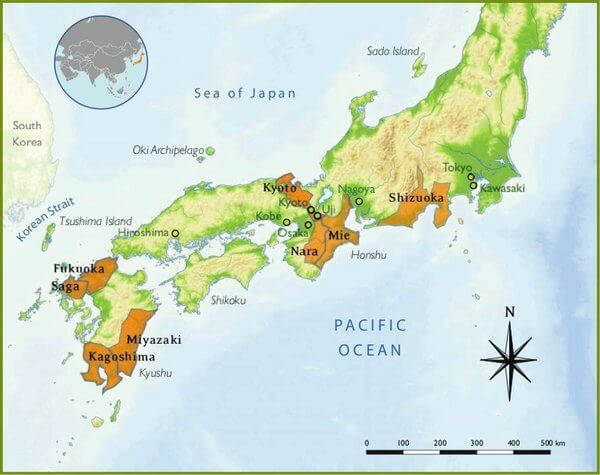

Regions

For being a relatively small island country, Japan is the second largest green tea producer in the world, contributing about 13% of the world’s green tea content. In Japan, about 99.9% of tea that is produced is green tea, which means that it is tea that has not been fermented. The only region in Japan that is not used to produce tea is the northernmost region of Hokkaido.
Shizuoka, located near the middle of the country between Mt. Fuji and the Pacific Ocean, is the largest and most well-known tea producing region in Japan. Around 40% of Japan’s tea plantations are situated in Shizuoka. The majority of tea they produce is Sencha.
After Shizuoka, producing 20% of the country’s tea, is Kagoshima. This region is located on the southern island of Kyushu. Even though Kagoshima is the second largest producer, they are not very popular or known on the mainland. However, this is now changing as their warm climate has brought out new flavors and styles with their teas.
Coming in third place is Mie, known for their Kabuse-cha. Other honorable mentions include Miyazaki, Uji in the Kyoto province, and Fukuoka which is extremely famous for their almost exclusive production of the highly sought after Gyokuro tea.
